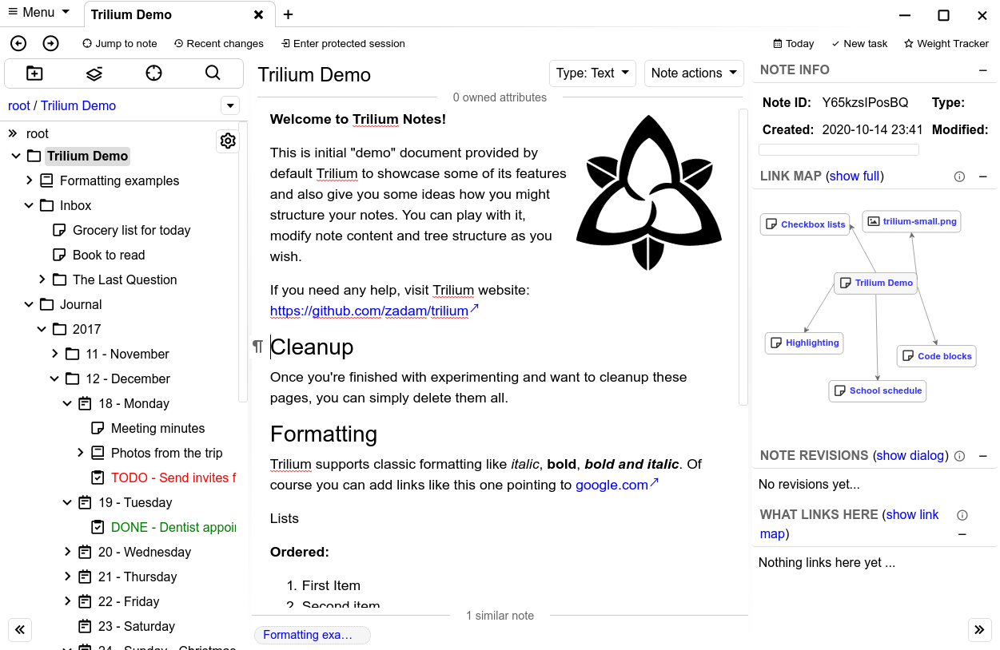

Quizás ha llegado el momento de tomar notas para seres humanos, voy a hablar de Trilum.
Trilium es un método jerárquico para tomar notas, tareas,… donde estás se gestionan con un método jerarquico como el orgmode y las podemos exportar a posterior a HTML, Markdown o incluso imprimirlas en pdf.

El método para introducir el texto es mediante la sintaxis markdown.
He probado diferentes dockers para la arquitectura amd64 y ARM así que finalmente me quedo con él dockers oficial para amd64 y otro que he encontrado de "hlince" para arm, que funciona muy bien en Raspberry.
El docker oficial y más actualizado para amd64 es:
docker run -t -i -p 127.0.0.1:99:8080 -v ~/trilium-data:/root/trilium-data zadam/trilium
Fork ugeek
docker run -t -i -p 127.0.0.1:99:8080 -v ~/trilium-data:/root/trilium-data ugeek/trilium:amd64
Es docker-compose para arm o Raspberry y funciona a la perfeción:
trilium:
image: hlince/trilium:latest-stable-arm
restart: always
ports:
- 99:8080
environment:
- TRILIUM_DATA_DIR=/data
volumes:
- ./trilium/data:/data
Fork de ugeek
trilium:
image: ugeek/trilium:arm
restart: always
ports:
- 99:8080
environment:
- TRILIUM_DATA_DIR=/data
volumes:
- ./trilium/data:/data
version: '3.7'
services:
web:
image: hlince/trilium:latest-stable-arm
container_name: trilium
environment:
- TRILIUM_DATA_DIR=/data
volumes:
- ./trilium/data:/data
networks:
- web
labels:
- traefik.port=8080
- traefik.enable=true
- traefik.frontend.rule=Host:trilium.midominio.duckdns.org
- "traefik.entrypoints=https"
- "traefik.docker.network=web"
- "traefik.backend.loadbalancer.stickiness=true"
- "traefik.backend.loadbalancer.swarm=true"
- "traefik.backend=trilium"
networks:
web:
external: true
Publicado por Angel el viernes 25 diciembre del 2020
También te puede interesar:
Powered by org-bash-blog
Writing in orgmode whith emacs

Este obra está bajo una licencia de Creative Commons Reconocimiento-NoComercial-CompartirIgual 4.0 Internacional.